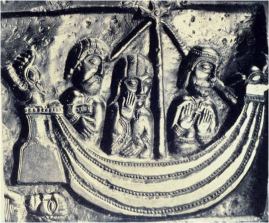
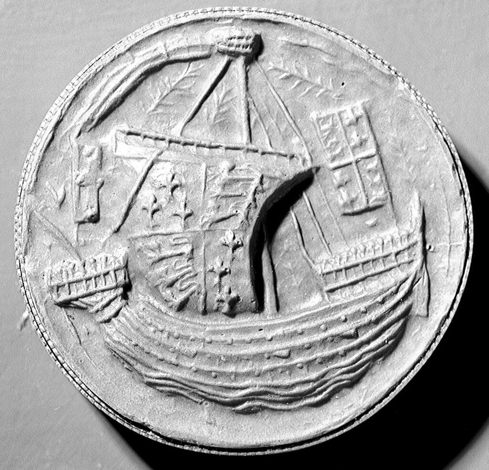
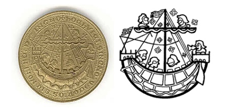

Хольк
Происхождением ― германец, вероятно...
Апухтин. Элегия
Ранее в нашем рассказе мы сравнивали марсилиану с хольком. Теперь наступило время разобраться, что собой представлял этот самый хольк; впрочем, исчерпывающего ответа на этот вопрос я не обещаю. История холька покрыта таким густым туманом, что ее можно сравнить разве что с историей термина «корабль».
В 1956 году в Веймаре вышла книга немецкого морского историка Поля Хайнсиуса (Paul Heinsius Das Schiff der hansischen Fruzeit ("Корабль раннего ганзейского периода")), которая заложила фундамент для множества исследований в области истории средневекового флота в Северной Европе. Хайнсиус, обработавший множество документальных и иконографических материалов, выделил три главных типа кораблей Средних веков – киль, пришедший на смену судам викингов, ког и хольк, однако не смог четко сформулировать главные признаки, по которым они отличаются друг от друга. Если для киля и кога имелось достаточно археологических материалов, полученных путем исследования мест кораблекрушений, то артефакты для идентификации холька практически отсутствовали. И поэтому, как и десятки лет назад, о форме корпуса, рангоуте и такелаже этого судна остается судить только по сохранившимся описаниям и картинкам. Наиболее ранние из них относятся к XII веку. Типичным образцом судна этого типа можно считать изображение холька на купели в Винчестерском кафедральном соборе, которое относят к 1180 году.

Здесь, как и на других изображениях холька той эпохи показано судно, закругленное как в продольном, так и в поперечном направлении, с неким подобием длинного и узкого киля, который плавно переходит в форштевень и ахтерштевень. Обшивка корпуса исполнена «внакрой», в клинкер. На тех изображениях, где обшивку можно разглядеть более детально, как, например , на изображении печати адмиралтейского суда Бристоля, видно, что клинкер исполнен реверсивно, т.е. верхняя кромка нижлежащей доски находит на нижний край доски, находящейся над ней..

Округлая форма корабля, как считают историки, послужила источником для его названия: нижненемецкий (тевтонский) корень «hol» означает полость, каверну, что-то полое. Однако упомянутый выше немецкий автор Хайнсиус считает иначе. Его гипотеза основана на изображении печати английского города Нью-Шорхэма (ок. 1300г.), имевшего также название Hulkesmouth

Городская печать города Нью-Шорхэма (New Shoreham), ок. 1300, National Maritime Museum, Greenwich, London.
Именно по названию этого города якобы и назвали корабль. Поэтому англичане без колебаний называют этот корабль Hulk.
Французы говорят о хольке «hourque», это название (с учетом h немого) превратилось у испанцев и португальцев в urca, у итальянцев – в orca, и также urca. Опытный моряк Пантеро Пантера в 1614 году, перечисляя все типы кораблей с прямым парусным вооружением (i vascelli quadri), ставит урку сразу после навы и галеона: La Naue , il Galeone, l’Vrca , la Marsiliana, il Bertone, la Germa, la Maona, il Caramusalino, la Palandarja, la Carauella, la Saettia, la Polacca, lo Schirazzo. (Это, конечно, не гомеровский «список кораблей», который наш нобелевский лауреат смог осилить лишь «до половины», но с учетом перечня судов с латинскими парусами, который мы приведем в соответствующее время, он дает представление о парусном флоте конца XVI-начала XVII века).
В России с хольком познакомились значительно позже, в эпоху Петра, восприняв его название от голландского hoeker. Поэтому в нашей литературе практически нет ни хольков, ни хульков, а есть гукер, гукар, гукор (именно такая последовательность определяется частотой использования этого термина в официальных бумагах морского ведомства. В общедоступной литературе предпочтительным является слово гукор).
Таким образом, у каждой морской державы был свой хольк. Насколько они были идентичны – судить трудно. Кто-то из историков склоняется к приведенной выше гипотезе, согласно которой они все имеют одного предка и происходят, как было отмечено выше, от немецкого hol, другие, более радикальные – от греческого Ὁλκάς. Некоторые выделяют hoeker в отдельную ветвь, происходящую от голландского hoek – «крюк», «крючок», что послужило основой для применения такого названия к рыбацким лодкам (хотя какие истинные рыбаки-профессионалы ловят рыбу удочкой?). (Я попытался разобраться в этом и приобрел на сей счет свое мнение, но для его обоснования потребуется много места, поэтому отложим это на потом.) Есть и вообще оригинальные мнения. Александр Саверьен, известный автор морского исторического словаря Dictionnaire historique, théorique et pratique de marine (1759) (мы писали о нем раньше), говорит в этом словаре, что хольк («урку») изобрел великий гуманист Эразм Роттердамский, чтобы удобно было плавать под парусом по каналам Голландии. Действительно, хольк очень хорошо ходит короткими галсами против ветра, что подходит для навигации по узким каналам, однако я не встречал нигде упоминаний об инженерных способностях Эразма такого уровня.
В заключение сегодняшнего разговора хочется призвать к использованию в нашем великом и могучем родового термина хольк в отношении парусников XV-XVII веков описанного типа (об их особенностях мы еще поговорим), военных или купеческих. Можно, конечно, писать о них и гукер, и гукор, но это подобно тому, как называть корабль линии времен расцвета парусного флота линкором: по форме правильно, но по сути – нет.